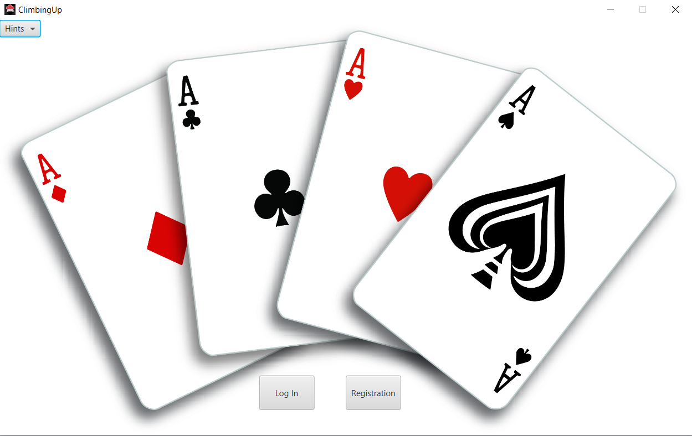
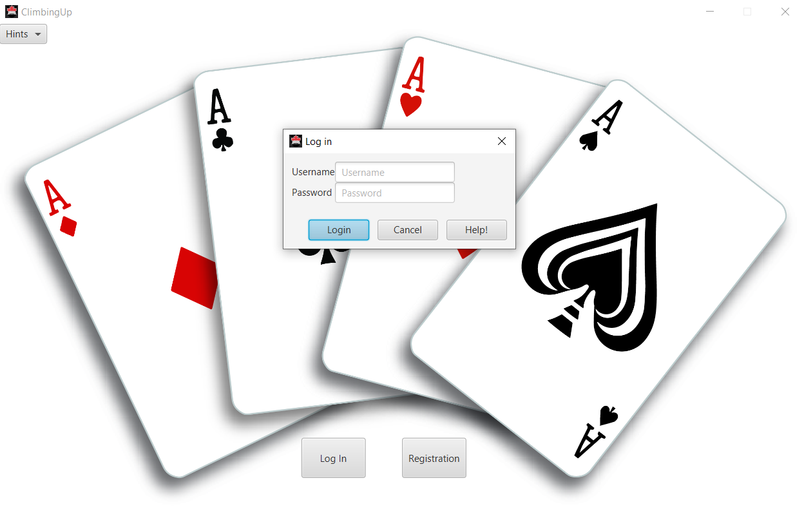
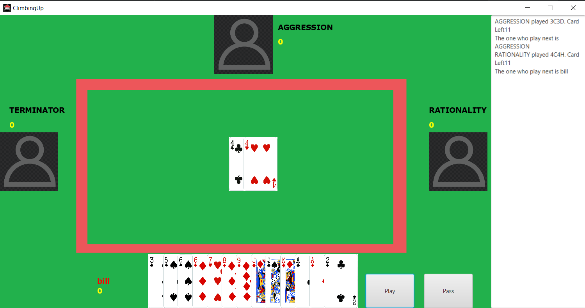
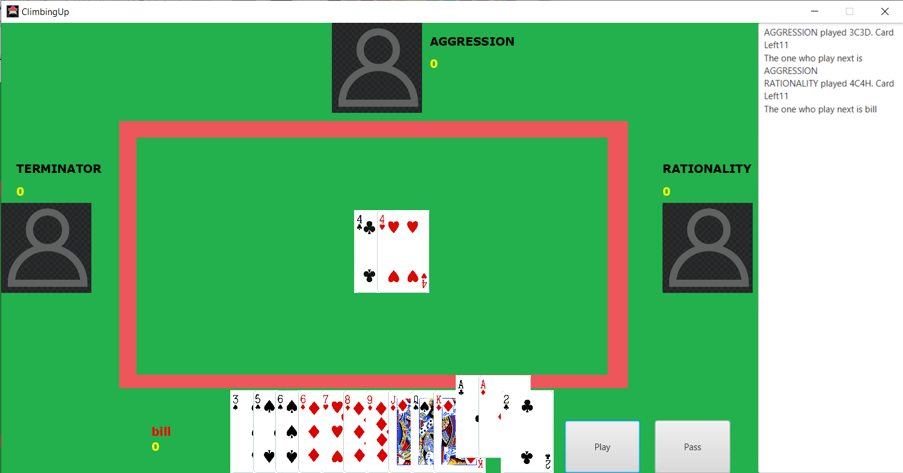

Here is some first scence of the game, it involes the login and registration process
Here is how the welcome scene look likes. It contains the hint bar, which will lead to two guidance sources.
If users click on the login screen, the login dialog will appear and ask for users input, which will be their userId and password.
 In case if users forget their password they can recover their password by clicking on the help button.In case users are new, then they can register for an account by clicking on the registration button
After successfully logging in to their account, users would see a background looks like this
If players name is on red, that means the current turn of the game is on that player. In the picture above, the current turn is bill and players' score is the number below their name. On the right hand side is the console log to help users remember cards played in a single game. the console log will be automatically renew each game.
To play cards, users just need to click on the card they want to play such as the picture below. And click play or pass. You are not allowed to undo your move.
Users are allowed to play 3 invalid melds in a single turn. In other words, they will lose their turn if they play 3 invalid melds in a row.
I hope you will have a good time while playing the game, cheers!